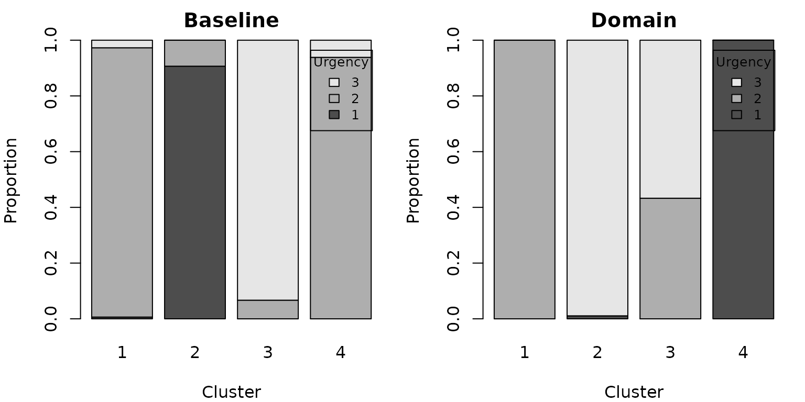

The credibility matrix S is dense and
n x n, so simOutrank is designed for logs of
hundreds to a few thousand cases – the regime of most trace clustering
studies. This article measures the pipeline on a synthetic 500-case log,
then reproduces the BPIC’11 case study of Delias et al. (2023),
including its Figures 2 and 3.
A synthetic 500-case log
templates <- list(
a = c("register", "triage", "consult", "discharge"),
b = c("register", "triage", "consult", "lab", "result", "discharge"),
c = c("register", "triage", "consult", "imaging", "result", "admit",
"discharge"),
d = c("register", "consult", "discharge")
)
urgency_of <- c(a = "low", b = "medium", c = "high", d = "low")
make_case <- function(id) {
kind <- sample(names(templates), 1, prob = c(0.35, 0.3, 0.2, 0.15))
acts <- templates[[kind]]
if (runif(1) < 0.25) acts <- c(acts, sample(acts, 1)) # a repeated step
n <- length(acts)
data.frame(
case_id = id,
activity = acts,
timestamp = as.POSIXct("2011-01-01", tz = "UTC") +
cumsum(c(0, round(rexp(n - 1, 1 / 30)))) * 60,
urgency = unname(urgency_of[kind]),
stringsAsFactors = FALSE
)
}
big_log <- do.call(rbind, lapply(sprintf("c%04d", 1:500), make_case))
nrow(big_log)
#> [1] 2606
traces <- as_traces(big_log, "case_id", "activity", "timestamp")
#> Warning: Tied timestamps within a case were ordered by original row order.
traces
#> <traces>: 500 cases, 8 distinct activities
#> trace length: min 3, median 5, max 8
#> case attributes: urgencyTiming the pipeline
criteria <- list(
crit_activity_profile(weight = 0.4),
crit_edit_distance(weight = 0.3, similarity = q(0.2), indifference = q(0.5)),
crit_nominal("urgency", weight = 0.3)
)
t_sim <- system.time(sim <- outrank_similarity(traces, criteria))
t_cl <- system.time(clust <- cluster_traces(sim, k = 4, seed = 1))
rbind(similarity = t_sim[["elapsed"]], clustering = t_cl[["elapsed"]])
#> [,1]
#> similarity 0.115
#> clustering 0.143The measures are fully vectorised (no per-pair apply()),
so 500 cases build S in well under a second on a laptop.
Memory, not time, is the practical ceiling: S for
n cases is 8 * n^2 bytes (about 2 MB at n =
500, 200 MB at n = 5000).
Trimming before clustering at scale
On real logs a few disconnected cases can distort the spectrum.
Greedy trimming is O(n^2) and always available; the exact
integer program is only advisable for small n.
trimmed <- trim_outliers(sim, prop = 0.05) # drop the 5% least connected
length(attr(trimmed, "trimmed"))
#> [1] 25Reproducing the BPIC’11 study (Delias et al., 2023, Sec. 4.2-4.3)
The paper’s real case study clusters ~1500 cases from the Business Process Intelligence Challenge 2011 hospital log into four groups, then injects domain knowledge (must-link on the urgency attribute) and trims outliers.
Data note. The BPIC’11 hospital log is published on 4TU.ResearchData under the 4TU General Terms of Use, which do not clearly permit redistribution of derivatives. We therefore do not ship the preprocessed log or the precomputed similarity matrix with the package. To run the pipeline below, obtain the log from its 4TU record and reproduce
similarity_ord.rdsas described in the paper. The two aggregate figure tables used just below carry no case-level data and are bundled, so the figures reproduce here directly.
With the similarity matrix in hand, the clustering and robustness steps are the usual API (shown but not run here):
S <- readRDS("similarity_ord.rds") # your reproduced matrix
ids <- as.character(seq_len(nrow(S)))
dimnames(S) <- list(ids, ids)
sim <- structure(list(S = S, C = S, D = 1 - S, case_ids = ids,
criteria = list(), case_attributes = NULL,
partials = NULL), class = "outrank_sim")
clust <- cluster_traces(sim, k = 4, seed = 1000, nstart = 100)
table(clust$memberships) # 250 / 292 / 465 / 493
trimmed <- trim_outliers(sim, prop = 0.05) # drop the 75 least connectedFigure 2 – must-link on urgency
The baseline clustering scatters each urgency category across clusters; a must-link constraint on urgency concentrates them.
mu <- read.csv(system.file("extdata", "MustLink_Urgency.csv",
package = "simOutrank"))
mu$Urgency <- factor(mu$Urgency.y)
op <- par(mfrow = c(1, 2), mar = c(4, 4, 2, 1))
for (m in c("Baseline", "Domain")) {
tab <- xtabs(freq ~ Urgency + kmL.cluster, mu[mu$Method == m, ])
barplot(tab, main = m, xlab = "Cluster", ylab = "Proportion",
col = gray.colors(nrow(tab)), legend.text = rownames(tab),
args.legend = list(title = "Urgency", cex = 0.8))
}
par(op)Figure 3 – trimming vs. model complexity
Trimming a few outliers reduces the complexity of the discovered process models (cyclomatic number CN and its coefficients CNC / CNCk).
tp <- read.csv(system.file("extdata", "Outliers_trimmingPLG.csv",
package = "simOutrank"))
avg <- tp[tp$Value == "Average", ]
avg <- avg[order(avg$Percentage), ]
op <- par(mfrow = c(1, 3), mar = c(4, 4, 2, 1))
for (metric in c("CN", "CNC", "CNCK")) {
plot(avg$Percentage, avg[[metric]], type = "b", pch = 19,
xlab = "Trimming %", ylab = metric, main = metric)
}
par(op)For logs beyond a few thousand cases, cluster a representative sample
or pre-aggregate identical traces before building S.
```